Tauche ein in eine Welt voller spannender und skurriler Informationen über bedeutende Frauen der Geschichte, löse die Rätsel,
finde die Quartette und werde EntdeckerIn. Femtett ist ein kurzes, webbasiertes Point-and-Click Adventure bestehend aus historischen
Fotografien und Grafiken. Ob der kurzen Dauer ist das Zwischenspeichern des Spielstands nicht möglich.
Dieses Game entstand im Rahmen des Kulturhackathon Coding da Vinci Süd 2019.
Cris Ortega 
Nadine Raddatz
mit Unterstützung von Ralf Altmann